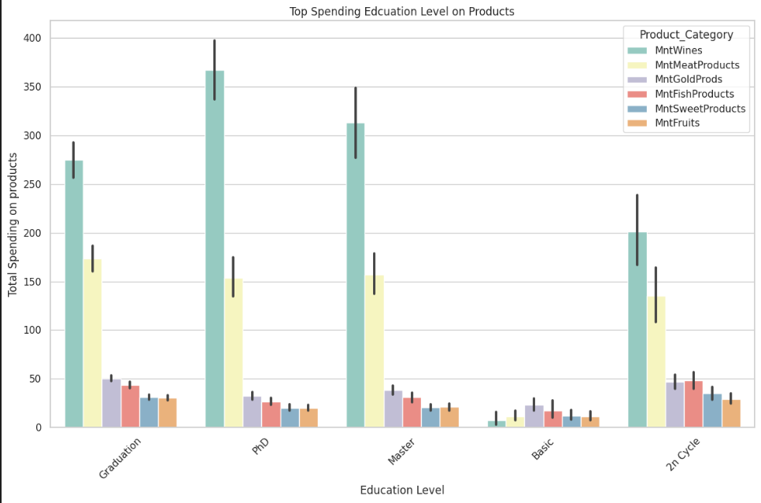

Tabular Data - DATA EDA - VISUALIZATION GRAPHS
What you can read from a box plot and from error bars in a bar plot, as short tables of insights.
Table of Content
- Tabular Data - DATA EDA - VISUALIZATION GRAPHS
- Table of Content
- Insights in Box Plot
- Error Bars in Bar Plot
Insights in Box Plot
Boxplots are a valuable tool for visualizing and interpreting the distribution of data. They provide several insights about a dataset:
| Insight | Description |
|---|---|
| Central Tendency | You can quickly identify the median (or second quartile, Q2) of the data, which represents the middle value when the data is sorted. It's the point where half of the data lies above and half below. |
| Spread or Variability | The interquartile range (IQR), represented by the length of the box, shows the spread of the middle 50% of the data. A larger IQR indicates greater variability within that range. |
| Skewness | Boxplots can reveal the skewness of the data distribution. If one whisker is longer than the other, it suggests that the data is positively or negatively skewed, depending on which whisker is longer. |
| Outliers | Individual points plotted beyond the whiskers are potential outliers. They can be identified visually and may require further investigation as they may indicate data anomalies or errors. |
| Comparison | Boxplots are excellent for comparing distributions between different groups or categories within a dataset. You can identify differences in central tendency, spread, or the presence of outliers between groups. |
| Symmetry | In symmetric boxplots, the median line is roughly centered within the box, indicating a symmetric distribution. In asymmetric (skewed) boxplots, the median may not be centered, suggesting an asymmetric distribution. |
| Data Dispersion | The length of the whiskers gives you an idea of how dispersed the data is. Longer whiskers indicate a larger range of data values. |
| Identifying Potential Data Issues | Unusual patterns in boxplots, such as extremely long whiskers or many outliers, can signal potential data quality issues or the need for further investigation. |
Overall, boxplots are valuable for gaining a quick understanding of the distribution of data, especially when dealing with multiple groups or categories. They provide a visual summary of key statistics and help you identify patterns and potential data anomalies.
Error Bars in Bar Plot

Error Bars [Vertical black lines] are graphical representation of the variability of data an used on graphs to indicate the error or uncertainty in a reported measurements. So they are set to 95% of error.